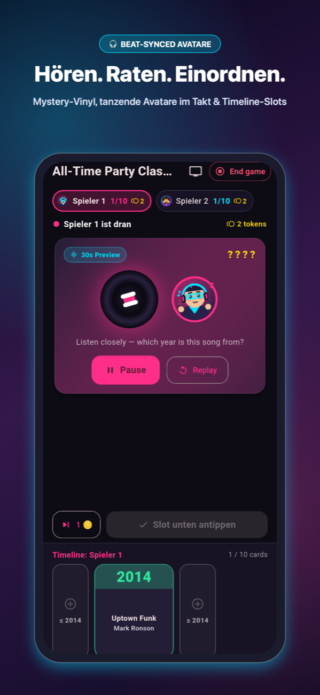
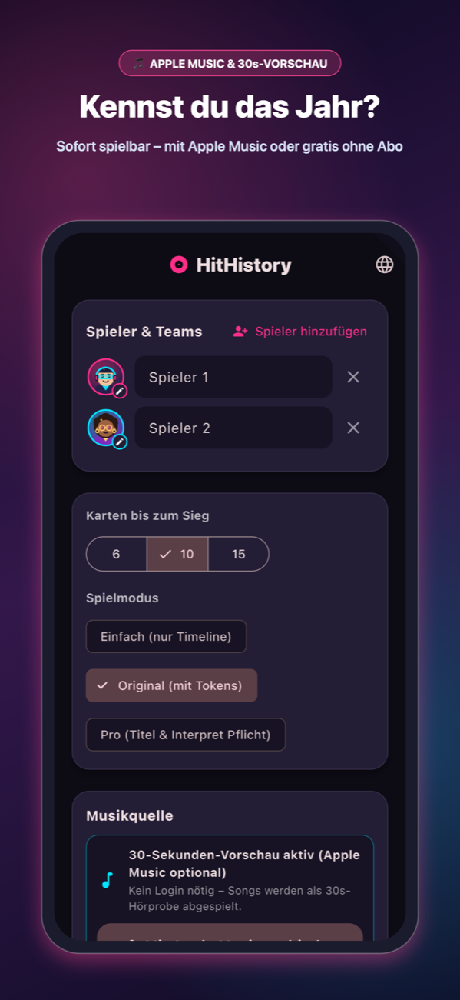
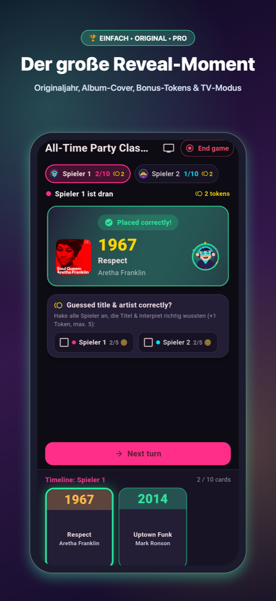
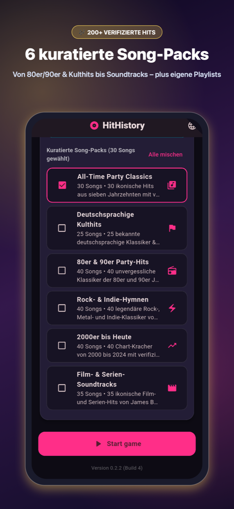
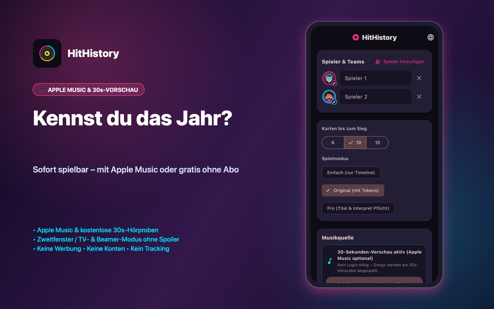
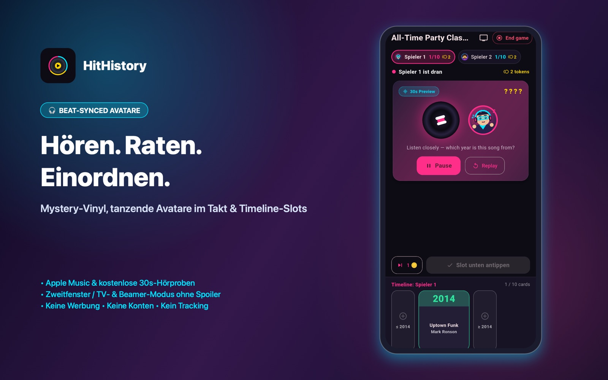
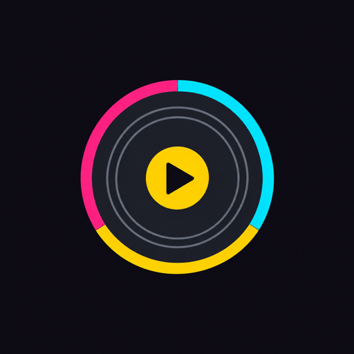

Song hören, Originaljahr schätzen, Timeline bauen. In Hit History legt ihr Hit für Hit eure eigene Musik-Zeitleiste an – wer zuerst 6, 10 oder 15 Karten richtig einsortiert, gewinnt. Gespielt wird mit 210 handverlesenen Hits als kostenlose 30-Sekunden-Hörproben ohne Login oder in voller Länge mit Apple Music – auf iPhone, iPad und Mac sogar mit euren eigenen Playlists. Für den Spieleabend kommt die Timeline per TV-Modus spoilerfrei auf den Fernseher.
Auf einem Gerät
Einfach, Original & Pro
Hits von 1958 bis 2024
Spoilerfrei auf dem großen Bildschirm

Dunkles Neon-Design für Partylicht und Wohnzimmer – vom Spieler-Setup bis zum großen Reveal (Aufnahmen auf dem iPhone).



Musikquiz und Brettspiel-Timeline in einer App – ohne Karten-Set, ohne Konto, ohne Abo-Zwang.
Jeder Song wird zur Karte: Liegt er vor, zwischen oder nach euren bisherigen Hits? Tippt den passenden Slot an – erst danach verrät die App das Originaljahr. Gespielt wird auf 6, 10 oder 15 Karten.
Einfach: nur die Timeline. Original: Bonus-Tokens für Titel und Interpret, damit Songs überspringen, beim Gegner „stehlen“ oder drei Tokens gegen eine Freikarte tauschen. Pro: Titel und Interpret sind Pflicht.
Alle kuratierten Hits laufen als 30-Sekunden-Hörprobe, ganz ohne Login. Mit Apple Music (iPhone, iPad und Mac) hört ihr die Songs in voller Länge.
Auf iPhone, iPad und Mac spielt ihr auch mit euren eigenen Apple-Music-Playlists; unter Android ist das derzeit nicht möglich. Damit Remaster und Best-of-Alben nicht schummeln, gleicht die App das Erscheinungsjahr mit der offenen Musikdatenbank MusicBrainz ab und nimmt das Originaljahr.
210 Hits von 1958 bis 2024 mit geprüftem Originaljahr: All-Time Party Classics, Deutschsprachige Kulthits, 80er & 90er Party-Hits, Rock- & Indie-Hymnen, 2000er bis Heute sowie Film- & Serien-Soundtracks. Packs lassen sich mischen, doppelte Songs werden aussortiert.
Acht Musik-Charaktere in eigenen Neon-Farben – sie tanzen im Takt des laufenden Songs und reagieren auf jede Auflösung. So sieht jeder sofort, wer gerade dran ist.
Per AirPlay, HDMI oder USB-C zeigt ein zweiter Bildschirm Timelines, Album-Cover und die Siegerehrung groß für alle – ohne Spoiler, denn Titel und Jahr erscheinen erst beim Reveal. Am Mac öffnet sich dafür ein eigenes Fenster.
Die Oberfläche gibt es auf Deutsch und Englisch – umschaltbar direkt im Spiel. Ein laufendes Spiel wird gespeichert und lässt sich später fortsetzen.
Keine Registrierung, keine Werbung, keine Tracker. Spielerinnen, Spieler und Spielstand bleiben auf eurem Gerät. Details in der Datenschutzerklärung.
Am Mac läuft Hit History als eigene App mit Apple Music. Das TV-Fenster zieht ihr einfach auf den Beamer oder Fernseher – die Steuerung bleibt am Laptop.


Wir suchen Testerinnen und Tester für Android sowie für iPhone, iPad und Mac. Ihr bekommt die App vor dem offiziellen Start und helft uns mit eurem Feedback, Fehler zu finden und das Spiel noch besser zu machen. Bei Interesse meldet euch einfach bei uns!
Ihr testet über den geschlossenen Test bei Google Play. Schickt uns dafür die E-Mail-Adresse eures Google-Kontos, mit dem ihr Google Play nutzt; anschließend bekommt ihr den Link zur Testversion.
Ihr testet über Apples TestFlight-App. Schickt uns dafür die E-Mail-Adresse eurer Apple-ID; anschließend bekommt ihr eine Einladung zur Testversion für iOS, iPadOS und macOS.
Lieber anders Kontakt aufnehmen? Schreibt uns an alex@wodniok.de oder über die Kontaktseite.

Hit History erscheint in Kürze im App Store für iPhone, iPad und Mac sowie bei Google Play für Android. Bis dahin suchen wir noch Testerinnen und Tester – meldet euch gern bei uns!